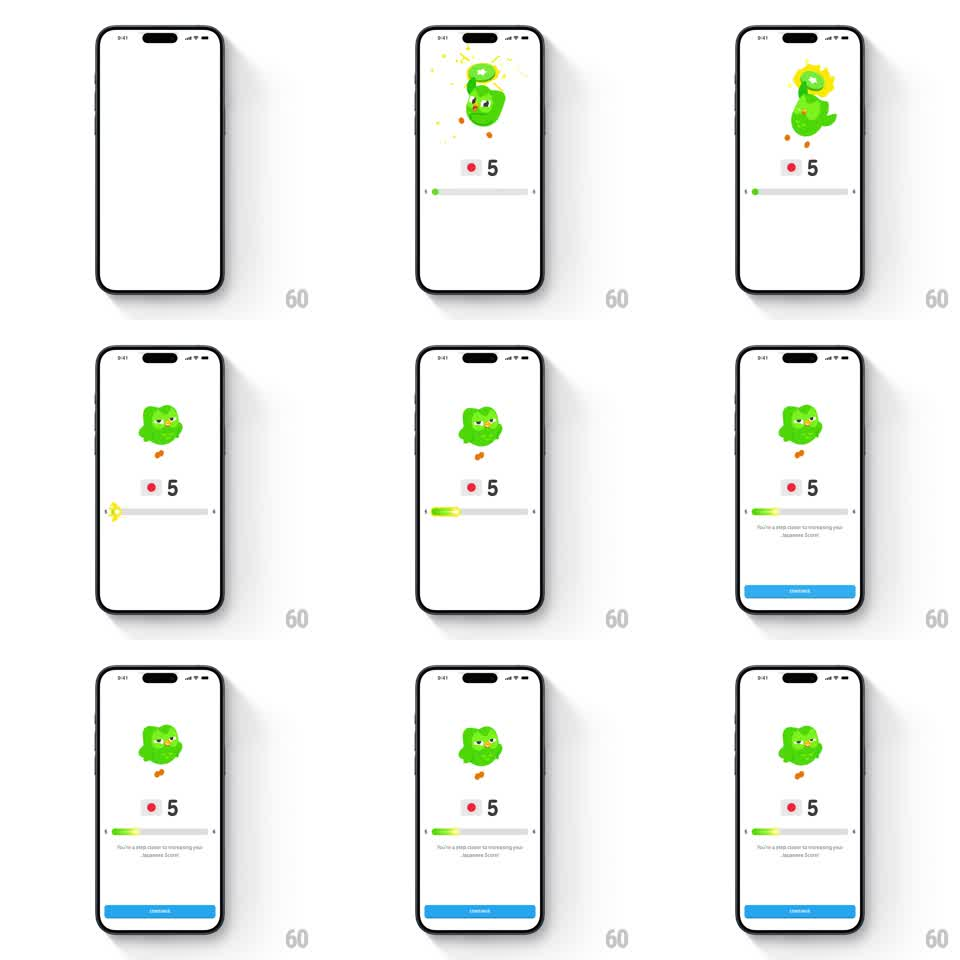

Media
Frame-by-frame

Rebuild this animation 1:1: Duolingo's score-progress screen - the owl crackles with electric energy on a light stage while the score bar fills: a green fill sweeps across the track with a glowing head, the score numeral holds, and "You're a step closer to increasing your Japanese Score!" settles in with a continue button.

Rebuild this animation 1:1: Duolingo's score-progress screen - the owl crackles with electric energy on a light stage while the score bar fills: a green fill sweeps across the track with a glowing head, the score numeral holds, and "You're a step closer to increasing your Japanese Score!" settles in with a continue button.
## Integration
Integration: stack-agnostic spec - springs given as stiffness/damping, timed motions as duration + curve; map every value to your framework and animation library of choice.
## Scene
White screen: owl mascot with yellow lightning/electric aura at top, score numeral ("5") with a small red flag dot, a long progress track, encouragement copy, blue continue button.
## Motion spec
Pattern: energy burst + meter fill, ~2s.
- Entrance: owl pops in with electric bolts flashing around it (3-4 bolt shapes, 150ms each, fading) - one crackle burst, then the aura calms to a soft glow (gentle 2s pulse).
- Bar: the green fill sweeps from its old value to the new one (700ms, ease-out) with a bright glowing head and a faint trailing shimmer; the track flashes once as the fill completes (150ms).
- Score numeral pulses (scale 1 -> 1.15 -> 1, 250ms) synced with the fill completing.
- Copy fades in (200ms), continue button slides up (250ms).
## Calibration
- The fill's glowing head is the focus - a flat fill reads as a loading bar.
- One electric burst only; continuous lightning turns celebration into noise.
## Reduced motion
Owl fades in; bar fills without glow; no bolt flash.
## Don't miss
- The aura glow persists after the burst at low intensity - the owl stays "charged".
- The red flag dot next to the numeral is part of the score readout - keep the pairing.